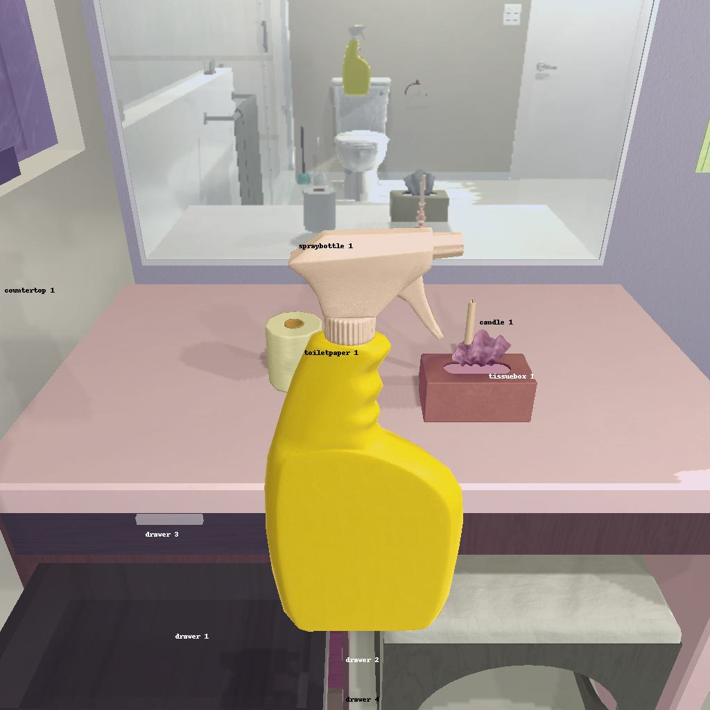

---------------------------------------------------------task: 28---------------------------------------------------------
--------------------------------------------------------------------------------------------------------------------------------------------------------------------
--------------------------------------------------------------------------------------------------------------------------------------------------------------------
Step:--------------------------------------------------------------------------8-------------------------------------------------------------------------------
----------------------------------------
VLM Prompt:
Image1:
**Instruction**
1. Analyze the provided image to identify all visible household objects, focusing on those relevant to the task description "find two spraybottle and put them in toilet."
2. Use the analysis of the image and the task hint "The agent must find an object of the desired type, pick it up, find the correct location to place it, put it down there, then look for another object of the desired type, pick it up, return to previous location, and put it down there with the other object." to answer the question: what is the most reasonable action in the choices for the task description "find two spraybottle and put them in toilet"?
4. Decide and write the answer using the template: The answer is: (i): , where i is the real number. If there is no desired object in the image, search every place based on **Initial Observation** to find the object. And if no one is exactly correct, choose a similar answer.
**Initial Observation**
You are in the middle of a room. Looking quickly around you, you can see bathtub (1), bathtubbasin (1), cart (1), sink (1), garbagecan (1), sinkbasin (1), countertop (1), drawer (1-4), toilet (1), toiletpaperhanger (1)
**Answer Choices**
(1): go to bathtub 1
(2): go to bathtubbasin 1
(3): go to cart 1
(4): go to sink 1
(5): go to garbagecan 1
(6): go to sinkbasin 1
(7): go to countertop 1
(8): go to drawer 2
(9): go to drawer 3
(10): go to drawer 4
(11): go to toilet 1
(12): go to toiletpaperhanger 1
(13): open drawer 1
(14): close drawer 1
(15): put spraybottle 1 in/on drawer 1
(16): examine spraybottle 1
(17): examine drawer 1
**Answer**
Let's think step by step by following the instructions.
----------------------------------------
----------------------------------------
Original Response:
First, we need to find two spray bottles. In the image, we can see one spray bottle labeled "spraybottle 1" on the countertop 1. Since we only see one spray bottle, to find the second one, we might need to search other places.
Following the initial observation, we should check places where another spray bottle might be found, such as drawers or a cart, if they are present in the room. There are no spray bottles in plain sight other than spraybottle 1, so we will need to search.
The most reasonable first action would be to pick up the visible spray bottle. However, since the action choices do not include picking up the spray bottle, we will have to choose an action that could lead us to find the second spray bottle.
The action that makes the most sense as the next step, based on the task description and the initial observation, would be to search the drawers as they might contain the second spray bottle. Among the answer choices, going to a drawer is our best bet for this task. Since we do not have any information on which drawer might contain the spray bottle, we could choose to go to drawer 2, as it is the first one in the sequence after the visible drawer 1, which is partially open and does not seem to contain a spray bottle.
The answer is: (8): go to drawer 2.
----------------------------------------
----------------------------------------
>>> Refine Original VLM Response and Get Pure Action: go to drawer 2
----------------------------------------
-----------------------------------------------------------------
Running time: 14.848409414291382 seconds
Total Money: 10.160780000000008
-----------------------------------------------------------------
-----------------------------------------------------------------
Text Observation:You arrive at loc 8. The drawer 2 is closed.
-----------------------------------------------------------------
UNSUCCEED